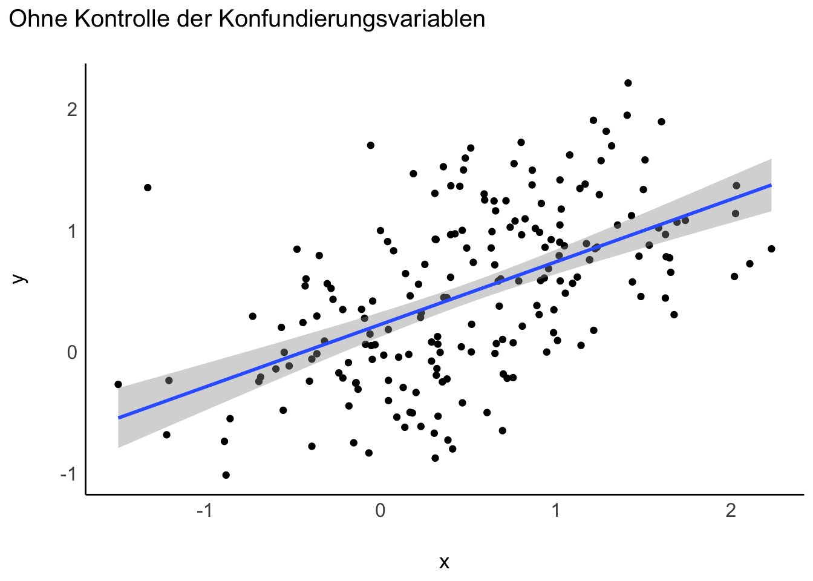
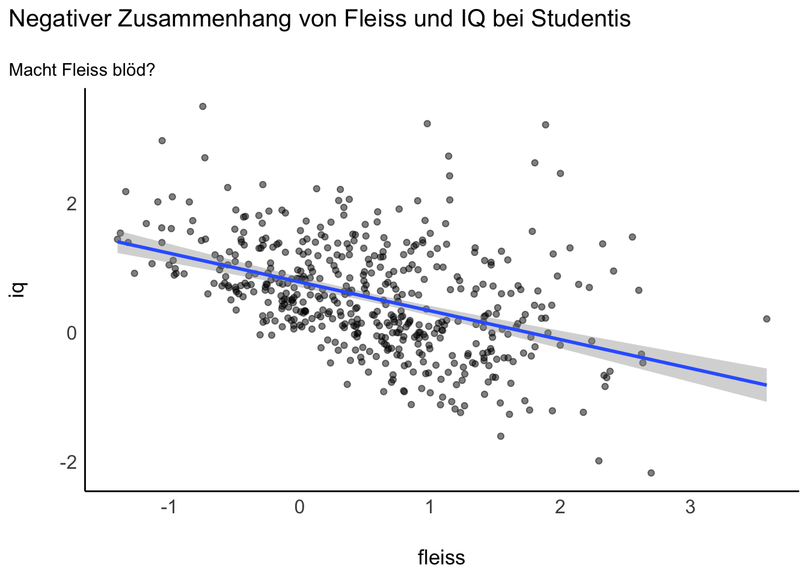
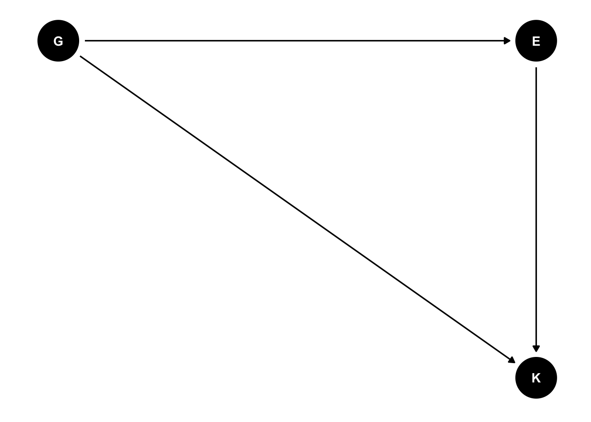
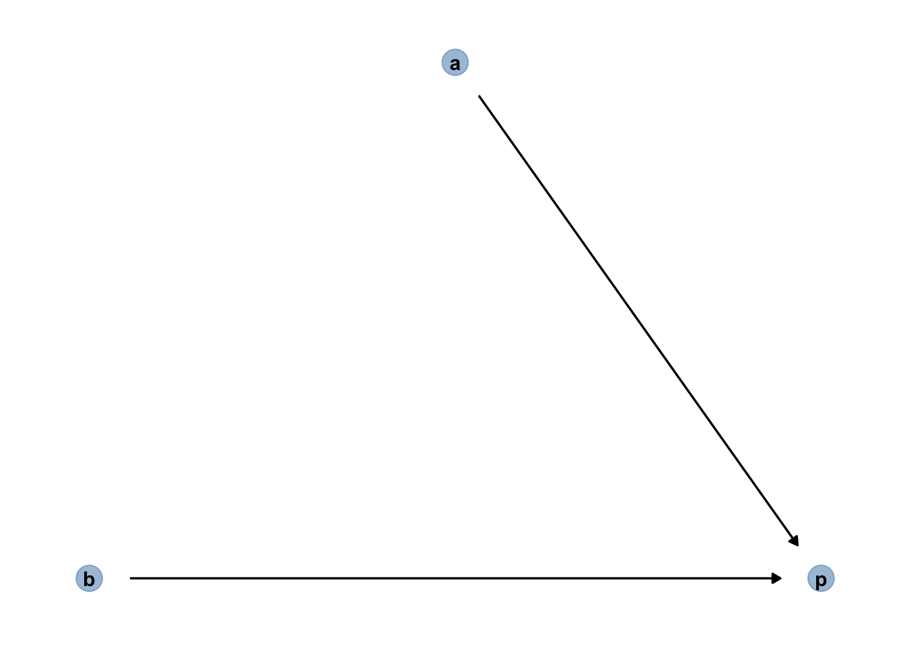
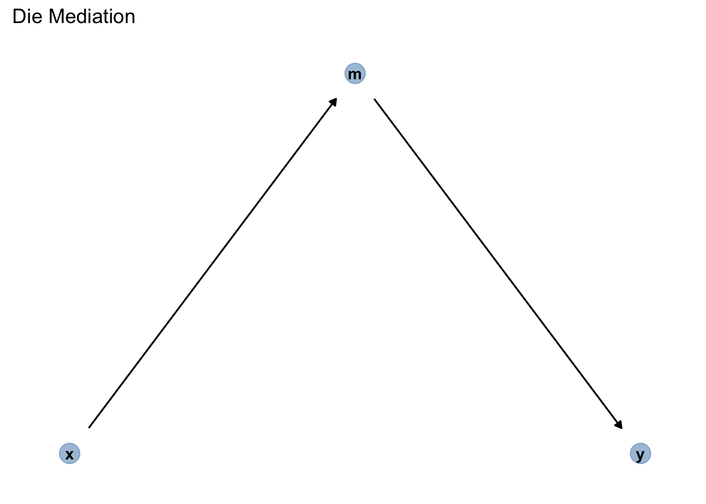
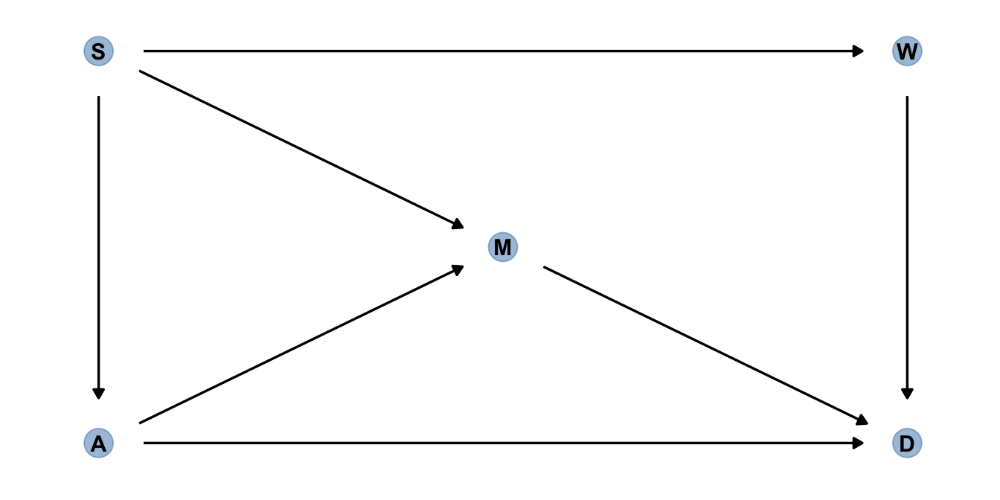

Code
library(dagitty)
library(tidyverse)
library(rstanarm)
library(easystats)Für dieses Kapitel benötigen Sie folgende R-Pakete:
library(dagitty)
library(tidyverse)
library(rstanarm)
library(easystats)Nach Absolvieren des jeweiligen Kapitels sollen folgende Lernziele erreicht sein.
Sie können …
Mit Blick auf Tabelle 11.1: Was raten Sie dem Arzt? Medikament einnehmen, ja oder nein?
| Gruppe | Mit Medikament | Ohne Medikament |
|---|---|---|
| Männer | 81/87 überlebt (93%) | 234/270 überlebt (87%) |
| Frauen | 192/263 überlebt (73%) | 55/80 überlebt (69%) |
| Gesamt | 273/350 überlebt (78%) | 289/350 überlebt (83%) |
Die Daten stammen aus einer (fiktiven) klinischen Studie, \(n=700\), hoher Qualität (Beobachtungsstudie). Bei Männern scheint das Medikament zu helfen; bei Frauen auch. Aber insgesamt (Summe von Frauen und Männern) nicht?! Was sollen wir den Arzt raten? Soll er das Medikament verschreiben? Vielleicht nur dann, wenn er das Geschlecht kennt (Pearl, Glymour, und Jewell 2016)?
In Wahrheit sehe die kausale Struktur so aus: Das Geschlecht (Östrogen) hat einen Einfluss (+) auf Einnahme des Medikaments und auf Heilung (-). Das Medikament hat einen Einfluss (+) auf Heilung. Betrachtet man die Gesamt-Daten zur Heilung, so ist der Effekt von Geschlecht (Östrogen) und Medikament vermengt (konfundiert, confounded). Die kausale Struktur, also welche Variable beeinflusst bzw. nicht, ist in Abbildung 11.1 dargestellt.

Betrachtung der Gesamtdaten zeigt in diesem Fall einen konfundierten Effekt: Geschlecht konfundiert den Zusammenhang von Medikament und Heilung.
Betrachtung der Teildaten (d.h. stratifiziert pro Gruppe) zeigt in diesem Fall den wahren, kausalen Effekt. Stratifizieren ist also in diesem Fall der korrekte, richtige Weg. Achtung: Das Stratifizieren ist nicht immer und nicht automatisch die richtige Lösung. Stratifizieren bedeutet, den Gesamtdatensatz in Gruppen oder “Schichten” (“Strata”)
Mit Blick auf Tabelle 11.2: Was raten Sie dem Arzt? Medikament einnehmen, ja oder nein?
| Gruppe | Ohne Medikament | Mit Medikament |
|---|---|---|
| geringer Blutdruck | 81/87 überlebt (93%) | 234/270 überlebt (87%) |
| hoher Blutdruck | 192/263 überlebt (73%) | 55/80 überlebt (69%) |
| Gesamt | 273/350 überlebt (78%) | 289/350 überlebt (83%) |
Die Daten stammen aus einer (fiktiven) klinischen Studie, \(n=700\), hoher Qualität (Beobachtungsstudie). Bei geringem Blutdruck scheint das Medikament zu schaden. Bei hohem Blutdrck scheint das Medikamenet auch zu schaden. Aber insgesamt (Summe über beide Gruppe) nicht, da scheint es zu nutzen?! Was sollen wir den Arzt raten? Soll er das Medikament verschreiben? Vielleicht nur dann, wenn er den Blutdruck nicht kennt? Pearl, Glymour, und Jewell (2016)
Das Medikament hat einen (absenkenden) Einfluss auf den Blutdruck. Gleichzeitig hat das Medikament einen (toxischen) Effekt auf die Heilung. Verringerter Blutdruck hat einen positiven Einfluss auf die Heilung. Sucht man innerhalb der Leute mit gesenktem Blutdruck nach Effekten, findet man nur den toxischen Effekt: Gegeben diesen Blutdruck ist das Medikament schädlich aufgrund des toxischen Effekts. Der positive Effekt der Blutdruck-Senkung ist auf diese Art nicht zu sehen.
Das Kausalmodell ist in Abbildung 11.2 dargestellt.

Betrachtung der Teildaten zeigt nur den toxischen Effekt des Medikaments, nicht den nützlichen (Reduktion des Blutdrucks).
Betrachtung der Gesamtdaten zeigt in diesem Fall den wahren, kausalen Effekt. Stratifizieren wäre falsch, da dann nur der toxische Effekt, aber nicht der heilsame Effekt sichtbar wäre.
Vergleichen Sie die DAGs Abbildung 11.1 und Abbildung 11.2, die die Kausalmodelle der Studien A und B darstellen: Sie sind unterschiedlich. Aber: Die Daten sind identisch.
Kausale Interpretation - und damit Entscheidungen für Handlungen - war nur möglich, da das Kausalmodell bekannt ist. Die Daten alleine reichen nicht. Gut merken.
Statistik alleine reicht nicht für Kausalschlüsse. 🧟 Statistik plus Theorie erlaubt Kausalschlüsse. 📚➕📊 🟰 🤩
Für Entscheidungen (“Was soll ich tun?”) braucht man kausales Wissen. Kausales Wissen basiert auf einer Theorie (Kausalmodell) plus Daten.
Nehmen wir an, es gibt zwei Behandlungsvarianten bei Nierensteinen, Behandlung A und B. Ärzte tendieren zu Behandlung A bei großen Steinen (die einen schwereren Verlauf haben); bei kleineren Steinen tendieren die Ärzte zu Behandlung B.
Sollte ein Patient, der nicht weiß, ob sein Nierenstein groß oder klein ist, die Wirksamkeit in der Gesamtpopulation (Gesamtdaten) oder in den stratifizierten Daten (Teildaten nach Steingröße) betrachten, um zu entscheiden, welche Behandlungsvariante er (oder sie) wählt?
Die Größe der Nierensteine hat einen Einfluss auf die Behandlungsmethode. Die Behandlung hat einen Einfluss auf die Heilung. Damit gibt es eine Mediation (“Kette”) von Größe \(\rightarrow\) Behandlung \(\rightarrow\) Heilung. Darüber hinaus gibt es noch einen Einfluss von Größe der Nierensteine auf die Heilung.
Das Kausalmodell ist in Abbildung 11.3 dargestellt; Abbildung 11.4 visualisiert alternativ.
Sollte man hier size kontrollieren, wenn man den Kausaleffekt von treatment schätzen möchte? Oder lieber nicht kontrollieren?
Ja: In diesem Fall sollte man size kontrollieren, denn man ist am Effekt des treatments interessiert. Würde man nicht size kontrollieren, bekäme man den “vermengten” Effekt von size und treatment, also keine (belastbare) Aussage über den Effekt der Behandlung.
Nehmen Sie Bezug zu folgenden Aussagen:
Studien zeigen, dass Einkommen und Heiraten (bzw. verheiratete sein) hoch korrelieren. Daher wird sich dein Einkommen erhöhen, wenn du heiratest.
Studien zeigen, dass Leute, die sich beeilen, zu spät zu ihrer Besprechung kommen. Daher lieber nicht beeilen, oder du kommst zu spät zu deiner Besprechung.
Bei Beobachtungsstudien ist aus den Daten alleine nicht herauszulesen, ob eine Intervention wirksam ist, ob es also einen kausalen Effekt von der Intervention (angenommen Ursache) auf eine AV (Wirkung) gibt. Damit ist auch nicht zu erkennen, welche Entscheidung zu treffen ist. Nur Kenntnis des Kausalmodells zusätzlich zu den Daten erlaubt, eine Entscheidung sinnvoll zu treffen.
Bei experimentellen Daten ist die Kenntnis des Kausalmodells nicht nötig (wenn das Experiment handwerklich gut gestaltet ist): Das Randomisieren der Versuchspersonen zu Gruppen und das Kontrollieren der Versuchsbedingungen sorgen dafür, dass es keine Konfundierung gibt.
Wir nutzen den Datensatz Saratoga County; s. Tabelle 11.3. Hier gibt es eine Beschreibung des Datensatzes.
d_path <- "https://vincentarelbundock.github.io/Rdatasets/csv/mosaicData/SaratogaHouses.csv"| price | livingArea | bedrooms | waterfront |
|---|---|---|---|
| 132500 | 906 | 2 | No |
| 181115 | 1953 | 3 | No |
| 109000 | 1944 | 4 | No |
| 155000 | 1944 | 3 | No |
| 86060 | 840 | 2 | No |
Finden Sie den Wert meiner Immobilie heraus!
Die muss viel wert sein!”
🧑 Das ist Don, Immobilienmogul, Auftraggeber.
Das finde ich heraus. Ich mach das wissenschaftlich.
👩 🔬 Das ist Angie, Data Scientistin.
“Hey Don! Mehr Zimmer, mehr Kohle!” 👩 🔬
Modell 1 (m1) modelliert den Hauspreis als Funktion der Zimmerzahl, s. Abbildung 11.5.

“Jedes Zimmer mehr ist knapp 50 Tausend wert. Dein Haus hat einen Wert von etwa 150 Tausend Dollar, Don.”
👩
Zu wenig! 🤬
🧑
Berechnen wir das Modell m1; der Punktschätzer des Parameters bedroom steht in Tabelle 11.4.
m1 <- stan_glm(price ~ bedrooms,
refresh = 0,
seed = 42,
data = d)
point_estimate(m1)| Parameter | Median | Mean | MAP | Effects | Component |
|---|---|---|---|---|---|
| (Intercept) | 60009.99 | 59849.74 | 60664.24 | fixed | conditional |
| bedrooms | 48158.27 | 48216.77 | 47909.81 | fixed | conditional |
point_estimates(modell) gibt die Punktschätzer der Parameter eines Modells zurück, aber nicht die Schätzbereiche. Möchten Sie beides, können Sie die Funktion parameters(modell) nutzen.2
Mit estimate_predictions können wir Vorhersagen berechnen (bzw. schätzen; die Vorhersagen sind ja mit Ungewissheit verbunden, daher ist “schätzen” vielleicht das treffendere Wort). Tabelle 11.5 zeigt den laut m1 vorhergesagten Hauspreis für ein Haus mit 2 Zimmern.
dons_house <- tibble(bedrooms = 2)
estimate_prediction(m1, data = dons_house)| bedrooms | Predicted | SE | CI_low | CI_high |
|---|---|---|---|---|
| 2 | 156389.4 | 88657.74 | -12212.28 | 338537.3 |
“Ich bau eine Mauer! Genial! An die Arbeit, Angie!
🧑
Don hofft, durch Verdopplung der Zimmerzahl den doppelten Verkaufspreis zu erzielen. Ob das klappt?
Das ist keine gute Idee, Don.”
👩
Berechnen wir die Vorhersagen für Dons neues Haus (mit den durch Mauern halbierten Zimmern), s. Tabelle 11.6.
dons_new_house <- tibble(bedrooms = 4)
estimate_prediction(m1, dons_new_house)| bedrooms | Predicted | SE | CI_low | CI_high |
|---|---|---|---|---|
| 4 | 252196.1 | 89401.64 | 73056.06 | 418070.4 |
Mit 4 statt 2 Schlafzimmer steigt der Wert auf 250k, laut m1, Abbildung 11.5.
Volltreffer! Jetzt verdien ich 100 Tausend mehr! 🤑 Ich bin der Größte! 🧑
Zur Erinnerung: “4e+05” ist die Kurzform der wissenschaftlichen Schreibweise und bedeutet: \(4 \cdot 100000 = 4\cdot10^5 = 400000\)
estimate_prediction(m1, dons_new_house) erstellt Vorhersageintervalle, berücksichtigt also zwei Quellen von Ungewissheit:
estimate_expectation(m1, dons_new_house) erstellt Konfidenzintervalle. berücksichtigt also nur eine Quelle von Ungewissheit:
Die Schätzbereiche sind in dem Fall deutlich kleiner:
estimate_expectation(m1, dons_new_house)| bedrooms | Predicted | SE | CI_low | CI_high |
|---|---|---|---|---|
| 4 | 252716.8 | 3104.557 | 246966.7 | 258965.2 |
Berechnen wir das Modell m2: price ~ bedrooms + livingArea, s. Tabelle 11.7.
m2 <- stan_glm(price ~ bedrooms + livingArea,
data = d,
seed = 42,
refresh = 0)
point_estimate(m2, centrality = "median")| Parameter | Median | Effects | Component |
|---|---|---|---|
| (Intercept) | 36780.6921 | fixed | conditional |
| bedrooms | -14238.3399 | fixed | conditional |
| livingArea | 125.4121 | fixed | conditional |
Was sind die Vorhersagen des Modell? Tabelle 11.8 gibt Aufschluss für den laut m2 vorhersagten Kaufpreis eines Hauses mit 4 Zimmern und 1200 Quadratfuß Wohnfläche; Tabelle 11.9 gibt die Schätzung (laut m2) für den Preis eines Hauses mit 2 Zimmern (und der gleichen Wohnfläche).
estimate_prediction(m2, data = tibble(bedrooms = 4, livingArea = 1200))| bedrooms | livingArea | Predicted | SE | CI_low | CI_high |
|---|---|---|---|---|---|
| 4 | 1200 | 129480.2 | 69148.83 | -4994.832 | 265798.9 |
| bedrooms | livingArea | Predicted | SE | CI_low | CI_high |
|---|---|---|---|---|---|
| 2 | 1200 | 159756.9 | 66709.43 | 27110.13 | 292549.7 |
Andere, aber ähnliche Frage: Wieviel kostet ein Haus mit sagen wir 4 Zimmer gemittelt über die verschiedenen Größen von livingArea? Stellen Sie sich alle Häuser mit 4 Zimmern vor (also mit verschiedenen Wohnflächen). Wir möchten nur wissen, was so ein Haus “im Mittel” kostet. Wir möchten also die Mittelwerte pro bedroom schätzen, gemittelt für jeden Wert von bedroom über livingArea. Die Ergebnisse stehen in Tabelle 11.10 und sind in Abbildung 11.6 visualisiert.
estimate_means(m2, at = "bedrooms", length = 7)| bedrooms | Mean | CI_low | CI_high |
|---|---|---|---|
| 1 | 242651.0 | 230896.5 | 254355.9 |
| 2 | 228388.9 | 221591.6 | 235187.0 |
| 3 | 214204.4 | 210892.6 | 217394.7 |
| 4 | 199922.2 | 194505.8 | 205326.3 |
| 5 | 185698.8 | 175731.2 | 195701.2 |
| 6 | 171469.8 | 156519.4 | 186377.2 |
| 7 | 157206.9 | 137108.9 | 177051.6 |
“Die Zimmer zu halbieren, hat den Wert des Hauses verringert, Don!”
👩
“Verringert!? Weniger Geld?! Oh nein!”
🧑
… wenn man die Wohnfläche (Quadratmeter) kontrolliert, s. Abbildung 11.7.
“Ne-Ga-Tiv!”
👩

💡 Durch das Aufnehmen von Prädiktoren in die multiple Regression werden die Prädiktoren kontrolliert (adjustiert, konditioniert):
Die Koeffizienten einer multiplen Regression zeigen den Zusammenhang \(\beta\) des einen Prädiktors mit \(y\), wenn man den (oder die) anderen Prädiktoren statistisch konstant hält.
Man nennt die Koeffizienten einer multiplen Regression daher auch parzielle Regressionskoeffizienten. Manchmal spricht man, eher umgangssprachlich, auch vom “Netto-Effekt” eines Prädiktors, oder davon, dass ein Prädiktor “bereinigt” wurde vom (linearen) Einfluss der anderen Prädiktoren auf \(y\).
Damit kann man die Regressionskoeffizienten so interpretieren, dass Sie den Effekt des Prädiktors \(x_1\) auf \(y\) anzeigen unabhängig vom Effekt der anderen Prädiktoren, \(x_2,x_3,...\) auf \(y\).
Man kann sich dieses Konstanthalten vorstellen als eine Aufteilung in Gruppen: Der Effekt eines Prädiktors \(x_1\) wird für jede Ausprägung (Gruppe) des Prädiktors \(x_2\) berechnet.
Aber welche und wie viele Prädiktoren soll ich denn jetzt in mein Modell aufnehmen?! Und welches Modell ist jetzt richtig?!
🧑
Leider kann die Statistik keine Antwort darauf geben.
👩
Wozu ist sie dann gut?!
🧑
In Beobachtungsstudien hilft nur ein (korrektes) Kausalmodell. Ohne Kausalmodell ist es nutzlos, die Regressionskoeffizienten (oder eine andere Statistik) zur Erklärung der Ursachen heranzuziehen: Die Regressionskoeffizienten können sich wild ändern, wenn man Prädiktoren hinzufügt oder weglässt. Es können sich sogar die Vorzeichen der Regressionsgewichte ändern; in dem Fall spricht man von einem Simpson-Paradox.
Often people want statistical modeling to do things that statical modeling cannot do. For example, we’d like to know wheter an effect is “real” or rather spurios. Unfortunately, modeling merely quantifies uncertainty in the precise way that the model understands the problem. Usually answers to lage world questions about truth and causation depend upon information not included in the model. For example, any observed correlation between an outcome and predictor could be eliminated or reversed once another predictor is added to the model. But if we cannot think of the right variable, we might never notice. Therefore all statical models are vulnerable to and demand critique, regardless of the precision of their estimates and apparaent accuracy of their predictions. Rounds of model criticism and revision embody the real tests of scientific hypotheses. A true hypothesis will pass and fail many statistical “tests” on its way to acceptance.
McElreath (2020), S. 139
km1Das Kausalmodell km1 ist in Abbildung 11.8 dargestellt; vgl. Abbildung 11.7.

Wenn dieses Kausalmodell stimmt, findet man eine Scheinkorrelation zwischen price und bedrooms.
Eine Scheinkorrelation ist ein Zusammenhang, der nicht auf eine kausalen Einfluss beruht.
d_connected heißt, dass die betreffenden Variablen “verbunden” sind durch einen gerichteten (d wie directed) Pfad, durch den die Assoziation (Korrelation) wie durch einen Fluss fließt 🌊. d_separated heißt, dass sie nicht d_connected sind.
m2 kontrolliert die Konfundierungsvariable livingAreaWenn das Kausalmodell stimmt, dann zeigt m2 den kausalen Effekt von livingArea.
Was tun wir jetzt bloß?! Oh jeh!
🧑
Wir müssen die Konfundierungsvariable kontrollieren.
👩
Abbildung 11.9 zeigt, dass bedrooms und price unkorreliert werden (d_separated), wenn man living area kontrolliert.

Durch das Kontrollieren (“adjustieren”), sind bedrooms und price nicht mehr korreliert, nicht mehr d_connected, sondern jetzt d_separeted.
Gehen wir in diesem Abschnitt davon aus, dass km1 richtig ist.
Ohne Kontrollieren der Konfundierungsvariablen: Regressionsmodell y ~ x, Abbildung 11.10, links: Es wird (fälschlich) eine Korrelation zwischen x und y angezeigt: Scheinkorrelation. Mit Kontrollieren der Konfundierungsvariablen: Regressionsmodell y ~ x + group, Abbildung 11.10, rechts.

Abbildung 11.10, rechts, zeigt korrekt, dass es keine Korrelation zwischen x und y gibt, wenn group kontrolliert wird. Außerdem sieht man im rechten Teildiagramm, dass es ein Kontrollieren der Variable group durch Aufnahme als Prädiktor in die Regressionsgleichung einem Stratifizieren entspricht (getrennte Berechnung der Regressionsgerade pro Gruppe).
m1 und m2 passen nicht zu den Daten, wenn km1 stimmtLaut km1 dürfte es keine Assoziation (Korrelation) zwischen bedrooms und price geben, wenn man livingArea kontrolliert, wie in Abbildung 11.8 dargestellt. Es gibt aber noch eine Assoziation zwischen bedrooms und price geben, wenn man livingArea kontrolliert. Daher sind sowohl m1 und m2 nicht mit dem Kausalmodell km1 vereinbar.
km2Unser Modell m2 sagt uns, dass beide Prädiktoren jeweils einen eigenen Beitrag zur Erklärung der AV haben.
Daher könnte das folgende Kausalmodell, km2 besser passen.
In diesem Modell gibt es eine Wirkkette: \(a \rightarrow b \rightarrow p\).
Insgesamt gibt es zwei Kausaleinflüsse von a auf p: - \(a \rightarrow p\) - \(a \rightarrow b \rightarrow p\)
Man nennt die mittlere Variable einer Wirkkette auch einen Mediator und den Pfad von der UV (a) über den Mediator (b) zur AV (p) auch Mediation, s. Abbildung 11.11.

km3So sieht Dons Kausalmodell aus, s. Abbildung 11.12.

Ich glaube aber an mein Kausalmodell. Mein Kausalmodell ist das größte! Alle anderen Kausalmodelle sind ein Disaster!”
🧑
“Don, nach deinem Kausalmodell müssten
bedroomsundlivingAreaunkorreliert sein. Sind sie aber nicht.”
Rechne doch selber die Korrelation aus, Don:
Äh, wie ging das nochmal?
🧑
So könntest du das rechnen, Don: correlation(d, select = c("bedrooms", "livingArea")). Oder z.B. so:
dons_r <- d %>%
summarise(cor(bedrooms, livingArea))Die Korrelation liegt also bei 0.66
Bitte, gerne hab ich dir geholfen, Don.
👩
km1: b: bedrooms, p: price, a area (living area), s. Abbildung 11.8.
Das Kausalmodell km1 behauptet: \(b \perp \!\!\! \perp p \, |\, a\): bedrooms sind unabhängig von price, wenn man livingArea kontrolliert.
Kontrollieren einer Variable \(Z\) erreicht man auf einfache Art, indem man sie in zusätzlich zur vermuteten Ursache \(X\) in die Regressionsgleichung mit aufnimmt, also y ~ x + z.
Aber diese behauptete Unabhängigkeit findet sich nicht in den Daten wieder, s. Tabelle 11.7. Also: ⛈️ Passt nicht zu den Daten!
km2 b: bedrooms, p: price, a area (living area), s. Abbildung 11.11.
Das Kausalmodell km2 postuliert keine Unabhängigkeiten: Laut km2sind alle Variablen des Modells miteinander assoziiert (korreliert).
Ein Modell, in dem alle Variablen miteinander korreliert sind, nennt man auch satuiert oder saturiertes Modell. So ein Modell ist empirisch schwach. Denn: Behauptet ein Modell, dass die Korrelation zwischen zwei Variablen irgendeinen Wert zwischen -1 und +1 beträgt (nur nicht exakt Null), so ist das eine sehr schwache Aussage (und kaum zu falsifizieren). So ein Modell ist wissenschaftlich wenig wert. Das ist so ähnlich wie ein Modell, das voraussagt, dass es morgen irgendeine Temperatur hat zwischen -30 und +30 Grad (nur nicht exakt Null). Trifft diese Temperaturvorhersage ein, so werden wir nicht gerade beeindruckt sein. 🥱
Fazit: km2 passt zu den Daten, aber wir sind nicht gerade beeindruckt vom Modell.
km3: b: bedrooms, p: price, a area (living area), s. Abbildung 11.12.
\(b \perp \!\!\! \perp a\): bedrooms sind unabhängig von livingArea (a)
⛈️ km3 passt nicht zu den Daten/zum Modell!
Was sind DAGs? Wir haben in diesem Kapitel schon viele Beispiele gesehen, z.B. Abbildung 11.12.
DAGs sind eine bestimmte Art von Graphen zur Analyse von Kausalstrukturen.
Ein Graph besteht aus Knoten (Variablen) und Kanten (Linien), die die Knoten verbinden.
DAGs sind gerichtet; die Pfeile zeigen immer in eine Richtung (und zwar von Ursache zu Wirkung).
DAGs sind azyklisch; die Wirkung eines Knoten darf nicht wieder auf ihn zurückführen.
Ein Pfad ist ein Weg durch den DAG, von Knoten zu Knoten über die Kanten, unabhängig von der Pfeilrichtung.
Der DAG von km1 ist in Abbildung 11.8 zu sehen.
b: bedrooms, p: price, a area (living area)
Ja, der Job der Wissenschaft ist kein Zuckerschlecken. Aber wenn es einfach wäre, die Kausalstruktur der Phänomene zu entdecken, wären sie längst erkannt, und alle Probleme der Menschheit gelöst.
In Abbildung 11.13 sind mögliche Kausalmodelle für Dons Studie dargestellt.
Alle diese DAgs in Abbildung 11.8 haben die gleichen Implikationen hinsichtlich der (Un-)Abhängigkeiten zwischen der Variablen. Wir können also leider empirisch nicht bestimmen, welcher der DAGs der richtige ist. Um den richtigen DAG zu identifizieren, bräuchten wir z.B. einen reichhaltigeren DAG, also mit mehr Variablen.
Etwas verursachen kann man auch (hochtrabend) als “Kausation” bezeichnen.
Weiß man, was die Wirkung \(W\) einer Handlung \(H\) (Intervention) ist, so hat man \(H\) als Ursache von \(W\) erkannt.
McElreath (2020)
Viele Menschen denken - fälschlich - dass Korrelation Kausation bedeuten muss, s. Abbildung 11.14.

Sind zwei Variablen korreliert (abhängig, assoziiert), so kann es dafür zwei Gründe geben:
Eine mögliche Ursache einer Scheinkorrelation ist Konfundierung.
Konfundierung kann man entdecken, indem man die angenommene Konfundierungsvariable kontrolliert (adjustiert), z.B. indem man ihn als Prädiktor in eine Regression aufnimmt.
Ist die Annahme einer Konfundierung korrekt, so löst sich der Scheinzusammenhang nach dem Adjustieren auf.
Löst sich der Scheinzusammenhang nicht auf, sondern drehen sich die Vorzeichen der Zusammenhänge nach Adjustieren um, so spricht man einem Simpson-Paradox.
Die Daten alleine können nie sagen, welches Kausalmodell der Fall ist in einer Beobachtungsstudie. Fachwissen (inhaltliches wissenschaftliches Wissen) ist nötig, um DAGs auszuschließen.
🏎️ Vertiefung 🏎️
Eine Studie fand eine starke Korrelation, \(r=0.79\) zwischen (Höhe des) Schokoladenkonsums eines Landes und (Anzahl der) Nobelpreise eines Landes (Messerli 2012), s. Abbildung 11.15.

Korrelation ungleich Kausation! Korrelation kann bedeuten, dass eine Kausation vorliegt, aber es muss auch nicht sein, dass Kausation vorliegt. Liegt Korrelation ohne Kausation vor, so spricht man von einer Scheinkorrelation. Um Scheinkorrelation von echter Assoziation (auf Basis von Kausation) abzugrenzen, muss man die Kausalmodelle überprüfen, so wie wir das hier tun.
Der “Schoki-DAG” in Abbildung 11.16 zeigt den DAG für das Schokoloaden-Nobelpreis-Modell.

Gott ist gerecht (?)
Zumindest findet sich in folgenden Daten kein Zusammenhang von Intelligenz (talent) und Schönheit (looks), wie Abbildung 11.17 illustriert. Für geringe Intelligenzwerte gibt es eine breites Spektrum von Schönheitswerten und für hohe Intelligenzwerte sieht es genauso aus.

Seltsamerweise beobachten Sie, dass die Menschen, die Sie daten (Ihre Dates), entweder schön sind oder schlau - aber seltens beides gleichzeitig (schade), s. Abbildung 11.18.

Wie kann das sein?
🦹 🦸
Der DAG in Abbildung 11.19 bietet eine rettende Erklärung.

Eine ähnliche Visualisierung des gleichen Sachverhalts zeigt Abbildung 11.20.

Als Kollision (Kollisionsverzerrung, Auswahlverzerrung, engl. collider) bezeichnet man einen DAG, bei dem eine Wirkung zwei Ursachen hat (eine gemeinsame Wirkung zweier Ursachen). Kontrolliert man die Wirkung m, so entsteht eine Scheinkorrelation zwischen den Ursachen x und y. Kontrolliert man die Wirkung nicht, so entsteht keine Scheinkorrelation zwischen den Ursachen, s. Abbildung 11.19, vgl. Rohrer (2018).
Man kann also zu viele oder falsche Prädiktoren einer Regression hinzufügen, so dass die Koeffizienten nicht die kausalen Effekte zeigen, sondern durch Scheinkorrelation verzerrte Werte.
In der Zeitung Glitzer werden nur folgende Menschen gezeigt:
ehen wir davon aus, dass Schönheit und Reichtum unabhängig voneinander sind.
Wenn ich Ihnen sage, dass Don nicht schön ist, aber in der Glitzer häufig auftaucht, was lernen wir dann über seine finanzielle Situation?3
“Ich bin schön, unglaublich schön, und groß, großartig, tolle Gene!!!” 🧑
“So langsam check ich’s!”
Sei Z = X + Y, wobei X und Y unabhängig sind.
Wenn ich Ihnen sage, X = 3, lernen Sie nichts über Y, da die beiden Variablen unabhängig sind Aber: Wenn ich Ihnen zuerst sage, Z = 10, und dann sage, X = 3, wissen Sie sofort, was Y ist (Y = 7).
Also: X und Y sind abhängig – gegeben Z: \(X \not\perp \!\!\! \perp Y \,|\, Z\).
Abbildung 11.19 zeigt: Durch Kontrollieren entsteht eine Kollision, eine Scheinkorrelation zwischen den Ursachen.
Kontrollieren kann z.B. bedeuten:
date in zwei Gruppen und dann Analyse des Zusammenhangs von talent und looks in jeder Teilgruppe von datedate als Prädiktor in eine Regression zusätzlich zu looks mit talent als PrädikotrOhne Kontrolle von date entsteht keine Scheinkorrelation zwischen Looks und Talent. Der Pfad (“Fluss”) von Looks über date nach Talent ist blockiert.
Kontrolliert man date, so öffnet sich der Pfad Looks -> date -> talent und die Scheinkorrelation entsteht: Der Pfad ist nicht mehr “blockiert”, die Korrelation kann “fließen” - was sie hier nicht soll, denn es handelt sich um Scheinkorrelation.
Das Kontrollieren von date geht zumeist durch Bilden einer Auswahl einer Teilgruppe von sich.
Sagen wir, über die Eignung für ein Studium würden nur (die individuellen Ausprägungen) von Intelligenz (IQ) und Fleiss entscheiden, s. den DAG in Abbildung 11.21.

Bei positiver eignung wird ein Studium aufgenommen (studium = 1) ansonsten nicht (studium = 0).
eignung (fürs Studium) sei definiert als die Summe von iq und fleiss, plus etwas Glück:
set.seed(42) # Reproduzierbarkeit
N <- 1e03
d_eignung <-
tibble(
iq = rnorm(N), # normalverteilt mit MW=0, sd=1
fleiss = rnorm(N),
glueck = rnorm(N, mean = 0, sd = .1),
eignung = 1/2 * iq + 1/2 * fleiss + glueck,
# nur wer geeignet ist, studiert (in unserem Modell):
studium = ifelse(eignung > 0, 1, 0)
)Laut unserem Modell setzt sich Eignung zur Hälfte aus Intelligenz und zur Hälfte aus Fleiss zusammen, plus etwas Glück.
Eine Studie untersucht den Zusammenhang von Intelligenz (iq) und Fleiß (f) bei Studentis (s).
Ergebnis: Ein negativer Zusammenhang!?
Berechnen wir das “Eignungsmodell”, aber nur mit Studis (studium == 1), s. ?tbl-m-eignung.
m_eignung <-
stan_glm(iq ~ fleiss, data = d_eignung %>% filter(studium == 1), refresh = 0)
hdi(m_eignung)| Parameter | CI | CI_low | CI_high | Effects | Component |
|---|---|---|---|---|---|
| (Intercept) | 0.95 | 0.7004608 | 0.8596029 | fixed | conditional |
| fleiss | 0.95 | -0.5266816 | -0.3634545 | fixed | conditional |
Abbildung 11.23 zeigt das Modell und die Daten.

IQ ist nicht unabhängig von Fleiß in unseren Daten, sondern abhängig.
Nichtwissenschaftliche Berichte, etwa in einigen Medien, greifen gerne Befunde über Zusammenhänge auf und interpretieren die Zusammenhänge - oft vorschnell - als kausal.4
Nur durch das Stratifizieren (Aufteilen in Subgruppen, Kontrollieren, Adjustieren) tritt die Scheinkorrelation auf, s. Abbildung 11.24.
Ohne Stratifizierung tritt keine Scheinkorrelation auf. Mit Stratifizierung tritt Scheinkorrelation auf.
Wildes Kontrollieren einer Variablen - Aufnehmen in die Regression - kann genausog ut schaden wie nützen.
Nur Kenntnis des DAGs verrät die richtige Entscheidung: ob man eine Variable kontrolliert oder nicht.
Nimmt man eine Variable als zweiten Prädiktor auf, so “kontrolliert” man diese Variable. Das Regressiongewicht des ersten Prädiktors wird “bereinigt” um den Einfluss des zweiten Prädiktors; insofern ist der zweite Prädiktor dann “kontrolliert”.
Wir wollen hier den (kausalen) Einfluss der Eltern E und Großeltern G auf den Bildungserfolg der Kinder K untersuchen.
Wir nehmen folgende Effekte an:
G auf K: \(G \rightarrow E \rightarrow K\)E auf K: \(E \rightarrow K\)G auf K: \(G \rightarrow K\)Wir sind v.a. interessiert an \(G \rightarrow K\), dem direkten kausalen Effekt von Großeltern auf ihre Enkel, s. Abbildung 11.25, Kurz (2021).

Aber was ist, wenn wir vielleicht eine unbekannte Variable übersehen haben? (S. nächster Abschnitt). 👻
🏎️VERTIEFUNG - nicht prüfungsrelevant🏎️
👻
Es gibt “unheilbare” DAGs, nennen wir sie “Gespenster-DAGs”, in denen es nicht möglich ist, einen (unverzerrten) Kausaleffekt zu bestimmen, s. Abbildung 11.26. Letztlich sagt uns der DAG bzw. unsere Analyse zum DAG: “Deine Theorie ist nicht gut, zurück an den Schreibtisch und denk noch mal gut nach. Oder sammele mehr Daten.”

U könnte ein ungemessener Einfluss sein, der auf E und K wirkt, etwa Nachbarschaft.
Die Großeltern wohnen woanders (in Spanien), daher wirkt die Nachbarschaft der Eltern und Kinder nicht auf sie.
E ist sowohl für G als auch für U eine Wirkung, also eine Kollisionsvariable auf diesem Pfad.
Wenn wir E kontrollieren, wird es den Pfad \(G \rightarrow K\) verzerren, auch wenn wir niemals U messen.
Die Sache ist in diesem Fall chancenlos. Wir müssen diesen DAG verloren geben, McElreath (2020), S. 180.
Forschungsfrage: Wie groß ist der (kausale) Einfluss der Schlafzimmerzahl auf den Verkaufspreis des Hauses?
a: livingArea, b: bedrooms, p: prize
UV: b, AV: p
Das Kausalmodell ist in Abbildung 11.27 dargestellt.
Im Regressionsmodell p ~ b wird der kausale Effekt verzerrt sein durch die Konfundierung mit a. Der Grund für die Konfundierung sind die zwei Pfade zwischen b und p:
Beide Pfade erzeugen (statistische) Assoziation zwischen b und p. Aber nur der erste Pfad ist kausal; der zweite ist nichtkausal. Gäbe es nur nur den zweiten Pfad und wir würden b ändern, so würde sich p nicht ändern.
Abbildung 11.28 zeigt eine erfreuliche Situation: Die “Hintertür” zu unserer UV (Zimmerzahl) ist geschlossen!
Ist die Hintertür geschlossen - führen also keine Pfeile in unserer UV - so kann eine Konfundierung ausgeschlossen werden.

Die “Hintertür” der UV (b) ist jetzt zu! Der einzig verbleibende, erste Pfad ist der kausale Pfad und die Assoziation zwischen b und p ist jetzt komplett kausal.
Eine berühmte Lösung, den kausalen Pfad zu isolieren, ist ein (randomsiertes, kontrolliertes) Experiment. Wenn wir den Häusern zufällig (randomisiert) eine Anzahl von Schlafzimmern (b) zuweisen könnten (unabhängig von ihrer Quadratmeterzahl, a), würde sich der Graph so ändern. Das Experiment entfernt den Einfluss von a auf b. Wenn wir selber die Werte von b einstellen im Rahmen des Experiments, so kann a keine Wirkung auf b haben. Damit wird der zweite Pfad, \(b \rightarrow a \rightarrow p\) geschlossen (“blockiert”).
Konfundierende Pfade zu blockieren zwischen der UV und der AV nennt man auch die Hintertür schließen (backdoor criterion).
Wir wollen die Hintertüre schließen, da wir sonst nicht den wahren, kausalen Effekt bestimmen können.
Zum Glück gibt es neben Experimenten noch andere Wege, die Hintertür zu schließen, wie die Konfundierungsvariable a in eine Regression mit aufzunehmen.
Warum blockt das Kontrollieren von aden Pfad \(b \leftarrow a \rightarrow p\)? Stellen Sie sich den Pfad als eigenen Modell vor. Sobald Sie a kennen, bringt Ihnen Kenntnis über b kein zusätzliches Wissen über p. Wissen Sie hingegen nichts über a, lernen Sie bei Kenntnis von b auch etwas über p. Konditionieren ist wie “gegeben, dass Sie a schon kennen…”.
\(b \perp \!\!\! \perp p \,|\,a\)
Abbildung 11.29 stellt die vier “Atome” der Kausalinferenz dar. Mehr gibt es nicht! Kennen Sie diese vier Grundbausteine, so können Sie jedes beliebige Kausalsystem (DAG) entschlüsseln.
Die Mediation (Wirkkette, Rohr, Kette, chain) beschreibt Pfade, in der die Kanten gleiche Wirkrichtung haben: \(x \rightarrow m \rightarrow y\). Anders gesagt: Eine Mediation, auch “Kette” oder “Wirkkette” genannt, ist eine Kausalabfolge der Art \(x \rightarrow m \rightarrow y\), s. Abbildung 11.30. Die Variable in der Mitte \(m\) der Kette wird auch Mediator genannt, weil sei die Wirkung von X auf Y “vermittelt” oder übeträgt. Die Erforschung von Mediation spielt eine recht wichtige Rolle in einigen Wissenschaften, wie der Psychologie.

Ohne Kontrollieren ist der Pfad offen: Die Assoziation “fließt” den Pfad entlang (in beide Richtungen). Kontrollieren blockt (schließt) die Kette (genau wie bei der Gabel).
Ein Nachfahre (descendent) ist eine Variable die von einer anderen Variable beeinflusst wird, s. fig-dag-nachfahre. Kontrolliert man einen Nachfahren d, so kontrolliert man damit zum Teil den Vorfahren (die Ursache), m. Der Grund ist, dass d Information beinhaltet über m. Hier wird das Kontrollieren von d den Pfad von x nach y teilweise öffnen, da m eine Kollisionsvariable ist.

Wie kompliziert ein DAG auch aussehen mag, er ist immer aus diesen vier Atomen aufgebaut.
Hier ist ein Rezept, das garantiert, dass Sie welche Variablen Sie kontrollieren sollten und welche nicht:
X) zu AV (Y) auf.bsp1UV: \(X\), AV: \(Y\), drei Covariaten (A, B, C) und ein ungemessene Variable, U
Es gibt zwei Hintertürpfade in Abbildung 11.32:
Kontrollieren von \(A\) oder (auch) \(C\) schließt die offene Hintertür.
McElreath (2020), Kurz (2021), s.S. 186.
bsp2S. DAG in Abbildung 11.33: UV: \(W\), AV: \(D\)

Kontrollieren Sie diese Variablen, um die offenen Hintertüren zu schließen:
Details finden sich bei McElreath (2020) oder Kurz (2021), ‚S. 188.
bsp2Ein Graph ohne Us ist eine starke - oft zu starke (unrealistisch optimistische) - Annahme. Auch wenn die Daten nicht sagen können, welcher DAG der richtige ist, können wir zumindest lernen, welcher DAG falsch ist. Die vom Modell implizierten bedingten Unabhängigkeiten geben uns Möglichkeiten, zu prüfen, ob wir einen DAG verwerfen (ausschließen) können. Bedingten Unabhängigkeit zwischen zwei Variablen sind Variablen, die nicht assoziiert (also stochastisch unabhängig) sind, wenn wir eine bestimmte Menge an Drittvariablen kontrollieren.
bsp2 impliziert folgende bedingte Unabhängigkeiten:
## A _||_ W | S
## D _||_ S | A, M, W
## M _||_ W | SWie (und sogar ob) Sie statistische Ergebnisse (z.B. eines Regressionsmodells) interpretieren können, hängt von der epistemologischen Zielrichtung der Forschungsfrage ab:
Modellkoeffizienten ändern sich (oft), wenn man Prädiktoren zum Modell hinzufügt oder wegnimmt. Entgegen der verbreiteten Annahme ist es falsch, möglichst viele Prädiktoren in das Modell aufzunehmen, wenn das Ziel eine Kausalaussage ist. Kenntnis der “kausalen Atome” ist Voraussetzung zur Ableitung von Kausalschlüsse in Beobachtungsstudien.
Dieser Abschnitt ist prüfungsrelevant, birgt aber nichts Neues.↩︎
In aller Regel macht es mehr Sinn, die Schätzbereiche der Punktschätzer auch zu betrachten. Nur die Punktschätzer zu betrachten vernachlässigt wesentliche Information.↩︎
Don muss reich sein.↩︎
Ehrlicherweise muss man zugeben, dass auch wissenschaftliche Berichte Daten über Zusammenhänge gerne kausal interpretieren, oft vorschnell.↩︎